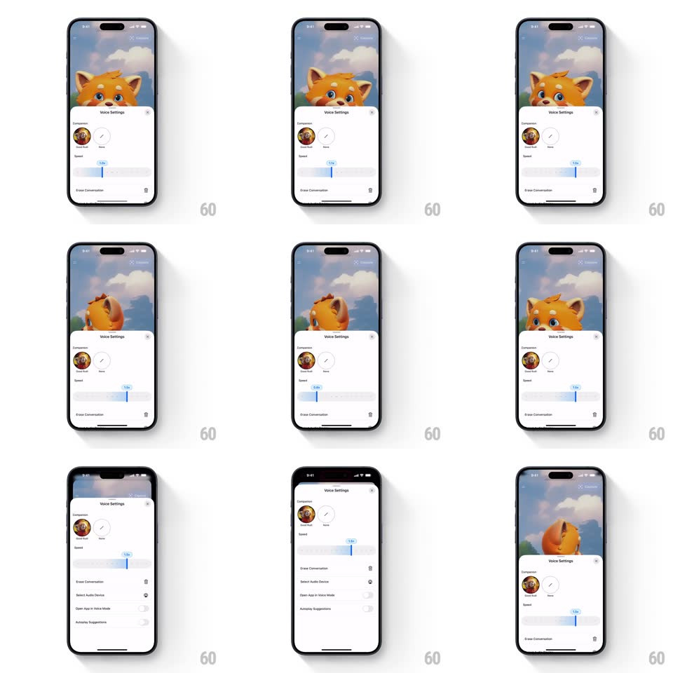

Media
Frame-by-frame

Rebuild this interaction 1:1: Grok's voice settings sheet - the companion fox peeks over the sheet while the Speed slider fills fluidly under the drag, its value bubble tracking the thumb from 0.5x to 1.5x.

Rebuild this interaction 1:1: Grok's voice settings sheet - the companion fox peeks over the sheet while the Speed slider fills fluidly under the drag, its value bubble tracking the thumb from 0.5x to 1.5x.
## Integration
Integration: stack-agnostic spec - springs given as stiffness/damping, timed motions as duration + curve; map every value to your framework and animation library of choice.
## Scene
Voice mode with a 3D fox companion on a sunny path. The "Voice Settings" sheet: a Companion picker (Rudi selected with a check), a Speed slider, and rows for Erase Conversation, Select Audio Device, Open App in Voice Mode, and Autoplay Suggestions.
## Motion spec
Pattern: fluid slider in a spring sheet, ~400ms sheet, live drag.
- Sheet: slides up (spring ~320/26, 400ms); the fox ducks as the sheet rises and peeks back over its top edge (spring ~300/20, 300ms delayed 100ms).
- Slider: the fill tracks the thumb 1:1; the thumb scales to 1.2 while dragging; a value bubble ("1.2x") rides above it (fade in 150ms on touch down, out on release).
- Steps: the slider eases into 0.1x stops with a soft tick (haptic-strength scale nudge 1.05, 80ms).
- Expand: dragging the sheet up reveals the lower rows, which stagger in (30ms each, 250ms).
## Calibration
- The fill color leads the thumb by a hair at drag start (spring lag, ~180/24) - it catches up, giving the fluid feel.
- The fox's peek reacts to sheet height, not time.
## Reduced motion
Sheet fades up; slider moves without the fill lag.
## Don't miss
- The value bubble never detaches from the thumb.
- The companion stays alive behind the sheet - it watches, ducks, and re-peeks.